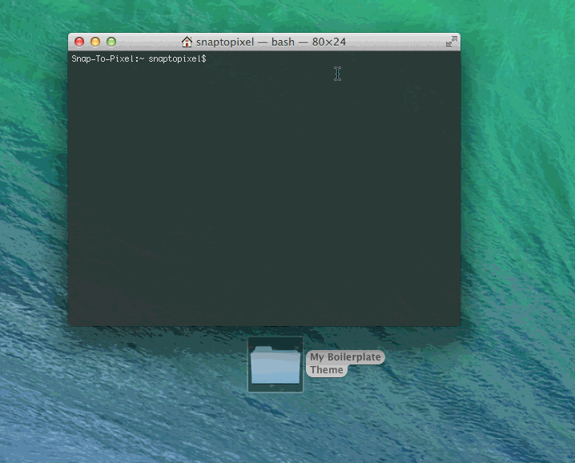

One-Time Deal
Once you've successfully installed the tools you'll need to perform a few more steps in order to start building themes. These only need to be performed once and then you'll be good to go.
Quick-Tips Before You Start
TotalTerminal was installed in your Applications folder as part of the install process. Launch it and then you can access your terminal at any time using the key combination CTRL + `
Clone the Project
The project files are hosted at GitHub, in order to access the repository you must be a member of the LightSpeed VT organization. Please contact an admin in order to get access.
Once you have access you can clone the following url:
https://github.com/lightspeedvt/boilerplate-css.git
Install the Required Modules
There are a number of required modules that are not included in the project files. These can be easily added via the command-line tools that were installed previously.
In order to install them just open the terminal, switch to your project directory and issue the commands sudo npm install followed by bower install as shown here:

Add the AWS Credentials
The AWS credentials are stored in the file aws-keys.json which is not included in the project files for security purposes. Please contact an admin in order to get a copy and then place it at the project root.
Become a Theme-building Superhero
Congratulations, you should now be ready to start churning out themes! The best place to start is to go through the tutorial and then read the documentation.